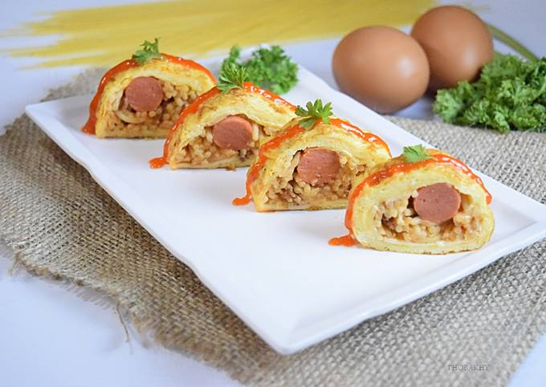
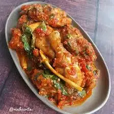
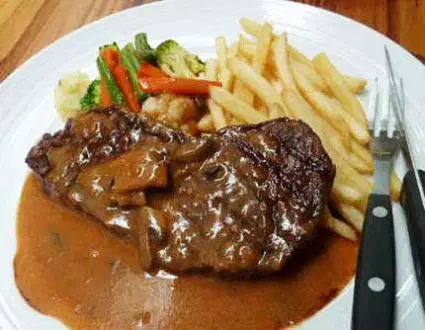

Kumpulan Resep Masakan
Bihun Pan Lipat Isi
bahan 1
- 150 g bihun jagung yang sudah di seduh dan tiriskan
- 2 batang daun bawang(daunnya) di iris
- 1 batang seledri (daunnya ) di iris
- 3 butir telur
- 1 sdt kecap asin
- 1 sdt saus tiram
- 1/2 sdt merica bubuk
- 1/8 sdt garam
- 1 sdt minyak wijen
- 2 sdm minyak goreng
bahan 2
- isian : 75 g abon
- sambal : 2 sdm saus cabe + 2 sdm gula pasir + 1 sdm kecap asin + 1 sdm air (campur semua hingga rata)
cara membuat:
- campurkan bihun yang sudah di seduh dengan telur, daun bawang, garam, merica, kecap asin, saus tiram, dan minyak wijen, aduk rata.
- panaskan pan yang sudah di olesi dengan minyak goreng
- letakkan cetakan, masukkan 2 sdm adonan, pipikan dan rapikan pada sisi cetakannya. tunggu hingga bagian bawahnya mulai matang , angkat cetakan.
- berikan 1 sdt abon dibagian tengahnya, biarkan hingga adonan cukup matang.
- lipat bihun hingga berbentuk 1/2 lingkaran. masak hingga matang. lakukan hingga selesai
- sajikan selagi hangat
Spaghetti Gulung

bahan 1
- 300 g spaghetti yang sudah direbus hingga matang
- 4 buah sosis
- 150 g keju cheddar, parut kasar
- 2 sdm keju parmesan
- 3 butir telur
- 1 sdt garam
- 1sdt mrica bubuk
- 150 ml susu cair
bahan 2
- 3 sdm minyak goreng
- 3 siung bawang putih, dicincang
- 1 buah bawang bombai, dicincang
- 2 sdm mentega
- 150 g kornet
- 3 sdm tepung roti kasar
bahan 3
- 500 ml minyak goreng
- 1 butir telur, kocok lepas beserta 1/4 sdt garam
- 150 g tepung roti halus
- aluminium foil
cara membuat
- panaskan minya goreng, tumis bawang putih hingga mulai kekuningan.
- tambahkan bawang bombai, aduk hingga cukup layu.
- masukkan mentega dan kornet aduk hingga kornet tidak menggumpal dan tercium aroma kornet. matikan api dan dinginkan sesaat.
- masukkan susu cair aduk hingga rata.
- gunting-gunting spaghetti lalu masukkan dalam adonan, aduk rata.
- masukkan keju cheddar dan 3 butir telur.
- masukkan keju parmesan dan tepung roti, aduk rata
- tambahkan garam lau merica.
- olesi aluminium foil dengan minyak dan taburi dengan tepung roti halus tipis-tipis hingga rata
- tusuk-tusuk aluminium foil supaya udara didalam bisa keluar
- panaskan kukusan, kukus spaghetti selama 15 menit. angkat dan dinginkan
- setelah dingin, buka aluminium foil , potong spaghetti menjadi 2 bagian
- kocok telur dengan garam
- lumuri spaghetti dengan kocokan telur kemudian gulingkan kedalam tepung roti halus hinnga rata
- panaskan minyak goreng, goreng hingga kekuningan, angkat dan tiriskan biarkan sesaat hingga hangat
- sajikan spaghetti dengan potongan sesuai selera
Ayam rica rica

bahan
- 1 ayam kampung utuh potong kecil
- 2 batang serai memarkan
- 1 bungkus Royco kaldu ayam
- 6 bawang merah iris tipis
- 1 daun pandan
- 1 daun kunyit
- 4 daun jeruk purut segar
- 500 ml air
- 1 Jeruk nipis ambil airnya
- 5 sendok makan minyak goreng untuk menumis
- 3 daun bawang potong potong kecil
- 2 kemangi segar
- 100 gram cabai merah
- 10 cabai rawit
- 6 bawang putih
- 3 bawang merah
- 1/2 jahe segar
- 1 sendok teh garam
cara membuat
- Tumis bawang merah, serai, daun pandan, daun kunyit hingga harum.
- Masukkan bumbu halus, daun jeruk, tumis hingga harum dan matang.
- Tambahkan ayam, tumis hingga berubah warna lalu tambahkan air. Kecilkan api, ungkep hingga air tinggal sedikit dan ayam lunak.
- Tambahkan air jeruk nipis, daun bawang dan daun kemangi, masak sebentar saja lalu angkat.
Steak

Bahan steak:
- 250 gram daging sapi, iris
- lada bubuk secukupnya
- garam secukupnya
- 1 siung bawang putih cincang
- mentega secukupnya
- lada hitam secukupnya
- rosemary kering secukupnya
- minyak zaitun secukupnya
Bahan saus:
- 1 sdm margarin
- 1 buah bawang bombay, iris
- 1 siung bawang putih, cincang
- 2 sdm saus tomat
- 2 sdm kecap manis
- 1 sdm tepung maizena, larutkan
- 1 sdm gula pasir
- 1/2 sdt garam
- 1/2 sdt lada bubuk
- 1/2 sdt kaldu bubuk
- 1 sdm kecap inggris
- 1 sdm saus tiram
- 1 sdm lada hitam
- 500 ml air
cara membuat sausnya
- Siapkan wajan, lelehkan margarin.
- Tumis bawang putih dan bawang bombay hingga harum.
- masukkan saus tomat, kecap manis, saus tiram, kecap inggris, gula pasir, dan air.
- tambahkan garam, lada bubuk, kaldu bubuk, dan lada hitam.
- Tunggu hingga mendidih, kemudian tuang larutan maizena.
- Aduk hingga tercampur rata.
- Setelah itu angkat, lalu sisihkan.
Cara membuat
- Marinasi daging dengan beri garam dan lada bubuk.
- Lakukan pada sisi daging lainnya, olesi hingga bumbu tercampur rata.
- Diamkan hingga bumbunya meresap.
- Tuangkan sedikit minyak zaitun di atas pemanggang, lalu tumis bawang putih hingga harum.
- Panggang daging sapi,
- Masukkan mentega, rosemary, dan lada hitam.
- Setelah daging matang, pindahkan ke piring, lalu siram dengan saus yang sudah dimasak.
- Beri pelengkap seperti irisan wortel, buncis, dan jagung. Steak daging sapi siap disajikan.